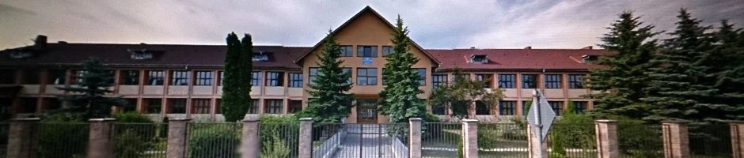

Misiunea Noastră
- Scopul și visiunea școlii
Ne propunem educarea complexă și echilibrată a elevilor pentru a le permite să
își cunoască și să își valorizeze potențialul și aptitudinile, să își dezvolte
personalitatea, astfel încât traseul lor educațional să se desfășoare sub semnul
succesului.
Valorile pe care le vom promova sunt: performanță, creativitate, profesionalism,
excelență, inițiativă, responsabilitate, spirit de echipă, dinamism și comunicare.
Liceul Teoretic „Radu Petrescu” Prundu Bârgăului satisface cererea de educaţie şi de
instruire profesională în domeniile matematică-informatică, filologie, ştiinţe ale
naturii, tehnologic (servicii, mecanic)
În cadrul actului educaţional se asigură consiliere şi orientare profesională pentru elevii
Văii Bârgăului, consiliere şi suport educaţional pentru părinţii acestora.
Ne dorim să fim o şcoală bună, ”o școală care învață”, în care elevii obţin rezultatele
scontate, atât din punct de vedere curricular, cât şi al împlinirii profesionale,
inclusiv starea de bine și bucuria de a învăţa.
